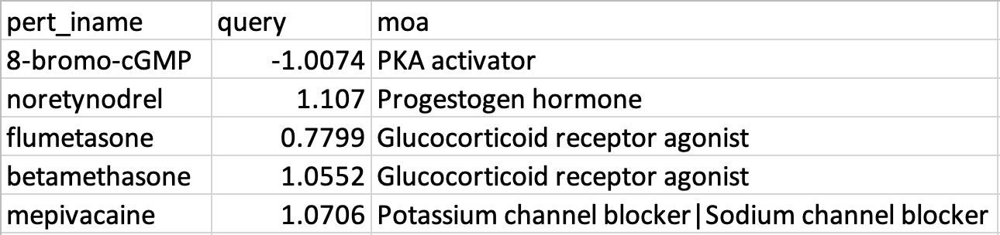
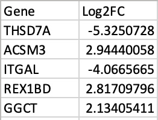

How to Use: Web App
The easiest way to use DMEA is with the web application here: https://belindabgarana.shinyapps.io/dmea . For more information, please watch our demo video below or Contact Us.
To use the web app, you can either run one of our provided examples or select one of 4 input types:
- CMap L1000 query output .gct file (i.e., “query_result.gct” or “ncs.gct”)
- CMap PRISM query output .gct file (i.e., “ncs.gct”)
- Drug rank list .csv file (drug names in column 1, drug rank metrics in column 2, optional: drug mechanisms-of-action in column 3; headers included)
- Gene signature .csv file (gene names in column 1, gene rank metrics in column 2; headers included)
DMEA is flexible to accept any signed numeric values as rank metrics for drugs or genes. Please refer to the example inputs below or the “Examples” folder on our GitHub repo: https://github.com/BelindaBGarana/DMEA
Drug Rank List
If the third column with moa annotations is not provided, our default moa annotations based on the PRISM drug screen dataset will be used.
Gene Signature
Gene signature inputs will be processed using the PRISM drug sensitivity score metric AUC (Area Under the Curve) and CCLE RNAseq data from version 19Q4.
How to Use: R Package
To use the DMEA R package, first install it by running the 2 lines of code below and then use the steps below to either input a drug rank list or a gene signature. If you use Windows OS, you may need to install the R package using devtools::install_github ('BelindaBGarana/DMEA', build=FALSE). DMEA is flexible to accept any signed numeric values as rank metrics for drugs or genes. To see examples, please refer to the “Examples” folder on our GitHub repo here: https://github.com/BelindaBGarana/DMEA
if (!require(devtools)) {install.packages("devtools")}
devtools::install_github ('BelindaBGarana/DMEA')
Drug Rank List
- Install the DMEA R package and load it from your library
- Input a dataframe containing your drug rank list. If you have mechanism-of-action (MOA) annotations, you can provide these in a column in your dataframe. If not, you must also input a gmt object such as “MOA_gmt_file_n6_no_special_chars.gmt” available in the “Inputs” folder on our GitHub repo. 2+ MOA must be represented in your input.
- Save the output dataframe of the enrichment results for each drug set in addition to plots summarizing the results
Gene Signature
- Install the DMEA R package and load it from your library
- Input a dataframe containing your gene signature, as well as dataframes containing drug sensitivity scores and gene expression data with common sample names in the first columns. If you have mechanism-of-action (MOA) annotations, you can provide these in a separate dataframe. If not, you must also input a gmt object such as “MOA_gmt_file_n6_no_special_chars.gmt”. This file, in addition to files containing drug sensitivity scores and gene expression data, is available in the "Inputs" folder on our GitHub repo. 2+ MOA must be represented in your input.
- Save the output dataframes with the Weighted Voting, correlation, and enrichment results for each drug set in addition to plots summarizing the results